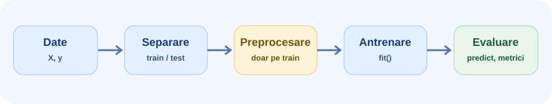
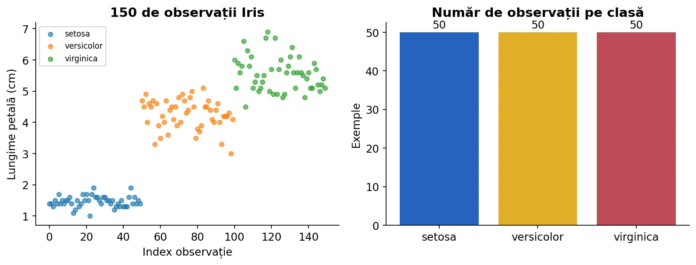
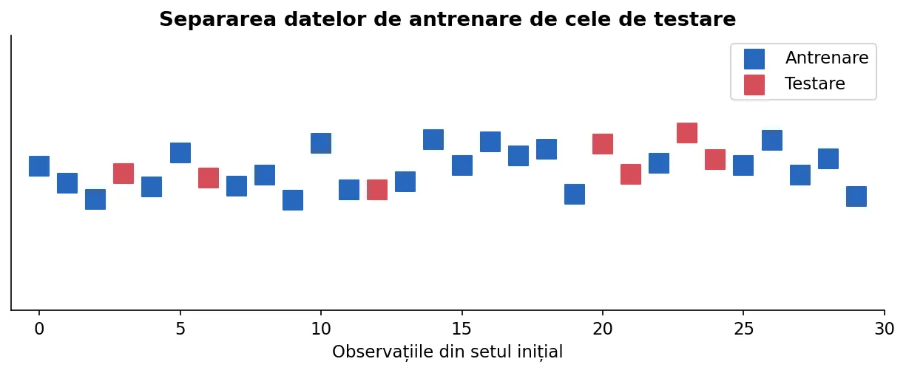
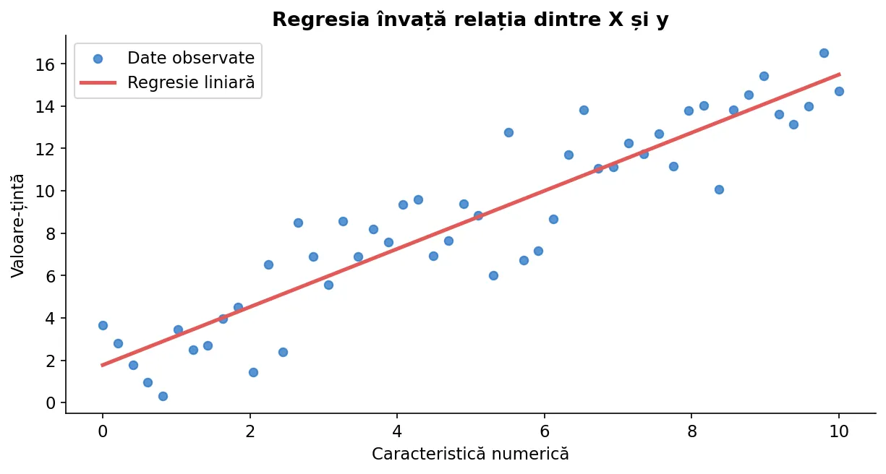
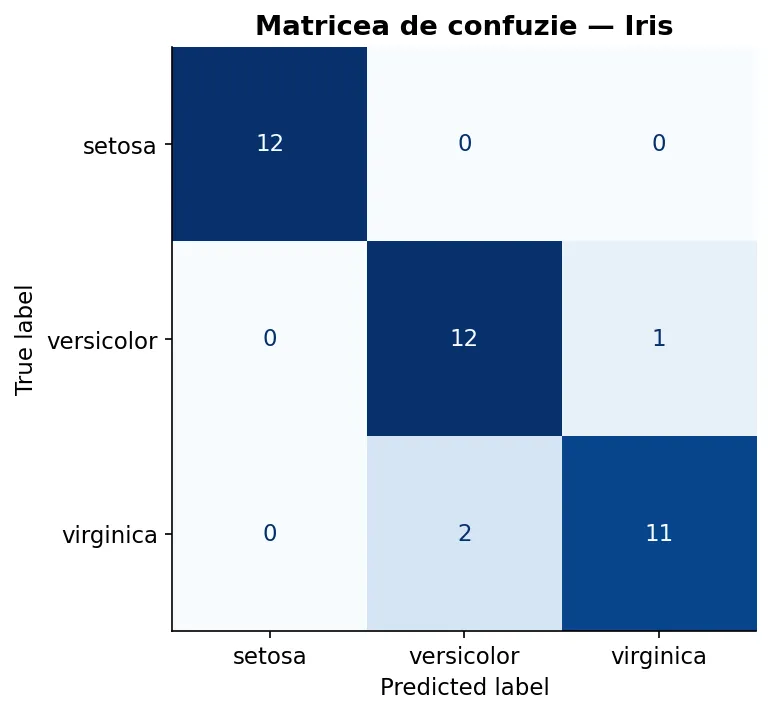
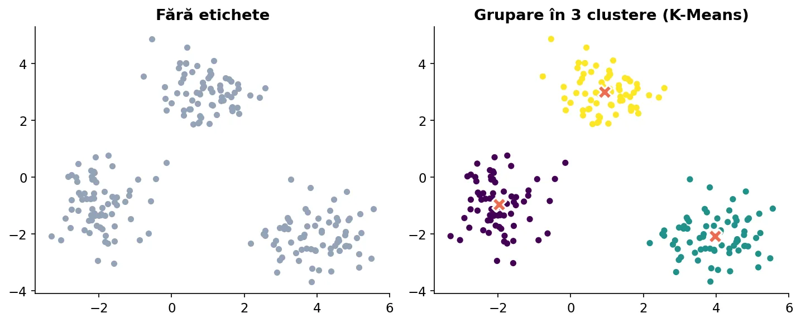

Un parcurs practic: reprezentarea datelor, antrenarea unui estimator, predicția, preprocesarea, evaluarea și validarea modelelor. Exemplele folosesc seturi de date disponibile în scikit-learn.
O bibliotecă Python care pune la dispoziție algoritmi și un mod de lucru consecvent.
Scikit-learn (importat prin sklearn) oferă implementări pentru clasificare, regresie, clustering, transformarea caracteristicilor și evaluarea modelelor. Biblioteca se bazează pe NumPy și se folosește frecvent împreună cu Pandas și Matplotlib.
Scopul acestei introduceri este să înțelegi fluxul comun al unui experiment. Regresia liniară, regresia logistică, K-NN, arborii și SVM vor fi studiate separat în capitolul Învățare supervizată.

python -m pip install scikit-learn matplotlib pandas. Într-un notebook Jupyter poți folosi %pip install scikit-learn. Numele pentru instalare este scikit-learn, iar pentru import este sklearn.Fiecare rând din X reprezintă o observație, iar fiecare coloană o caracteristică.
Pentru o problemă supervizată, matricea X are de regulă forma (n_samples, n_features), iar vectorul y conține ținta corespunzătoare fiecărei observații. În clasificare, y este o etichetă discretă; în regresie, de regulă o valoare numerică.
import numpy as np X = np.array([ [2.5, 1.2], [3.7, 1.8], [1.9, 0.9], ]) y = np.array([0, 1, 0]) print(X.shape) # (3, 2): 3 observații, 2 caracteristici print(y.shape) # (3,)
predict ca [[2.5, 1.2]], nu ca [2.5, 1.2], deoarece API-ul așteaptă două dimensiuni.Pentru primele experimente nu avem nevoie de fișiere descărcate de pe internet.
Setul Iris are 150 de observații, patru caracteristici măsurate pentru fiecare floare și trei clase. load_iris() îl poate returna direct ca două tablouri NumPy, pentru a ilustra clasificarea.

from sklearn.datasets import load_iris X, y = load_iris(return_X_y=True) print(X.shape) # (150, 4) print(y.shape) # (150,) print(set(y)) # {0, 1, 2}
Un model trebuie evaluat pe observații care nu au fost folosite la antrenare.
Cu train_test_split putem obține submulțimi disjuncte. Opțiunea stratify=y păstrează aproximativ proporțiile claselor; random_state face aceeași separare reproductibilă. Setul de test nu este utilizat pentru alegerea modelului sau ajustarea hiperparametrilor.

from sklearn.datasets import load_iris from sklearn.model_selection import train_test_split X, y = load_iris(return_X_y=True) X_train, X_test, y_train, y_test = train_test_split( X, y, test_size=0.25, random_state=42, stratify=y ) print(X_train.shape, X_test.shape)
Indiferent de algoritm, antrenarea și utilizarea unui estimator arată similar.
Construiești obiectul estimator, apelezi fit(X_train, y_train) pentru învățare, predict(X_test) pentru a obține predicții și eventual score(X_test, y_test) pentru o metrică implicită. score() nu are aceeași semnificație la toate modelele: la multe clasificatoare indică acuratețea, la multe regresoare coeficientul R².
from sklearn.datasets import load_iris from sklearn.model_selection import train_test_split from sklearn.tree import DecisionTreeClassifier from sklearn.metrics import accuracy_score X, y = load_iris(return_X_y=True) X_tr, X_te, y_tr, y_te = train_test_split( X, y, test_size=0.25, random_state=42, stratify=y ) model = DecisionTreeClassifier(max_depth=3, random_state=42) model.fit(X_tr, y_tr) pred = model.predict(X_te) print(accuracy_score(y_te, pred))
În regresie, ținta este o cantitate numerică.

import numpy as np from sklearn.linear_model import LinearRegression X = np.array([[1], [2], [3], [4], [5]]) y = np.array([3, 5, 7, 9, 11]) model = LinearRegression() model.fit(X, y) print(model.predict([[6]])) # [13.]
Atenție la diferența dintre fit și predict: primul învață parametrii din exemple; al doilea aplică modelul deja antrenat unei observații noi.
Scalarea devine importantă când variabilele sunt măsurate pe scări foarte diferite.
Un StandardScaler calculează media și abaterea standard pentru fiecare caracteristică pe datele oferite la fit, apoi transformă datele folosind valorile învățate. Pe setul de test trebuie apelat doar transform, nu recalculată scalarea.
import numpy as np from sklearn.preprocessing import StandardScaler X_train = np.array([[2.0, 100.0], [4.0, 150.0], [6.0, 200.0]]) X_test = np.array([[3.0, 125.0]]) scaler = StandardScaler() X_train_scaled = scaler.fit_transform(X_train) X_test_scaled = scaler.transform(X_test) print(X_test_scaled.round(2))
scaler.fit_transform(X) înainte de train_test_split(X, y) introduce informații despre datele de test în etapa de antrenare și poate conduce la evaluări prea optimiste.Combinăm transformarea și modelul într-un singur obiect, reducând riscul de data leakage.
Cu make_pipeline fiecare pas de transformare este antrenat doar pe observațiile primite la fit. Dacă împărțim datele înainte de antrenarea pipeline-ului, estimarea statisticilor de scalare nu folosește setul de test.
from sklearn.datasets import load_iris from sklearn.model_selection import train_test_split from sklearn.preprocessing import StandardScaler from sklearn.linear_model import LogisticRegression from sklearn.pipeline import make_pipeline X, y = load_iris(return_X_y=True) X_train, X_test, y_train, y_test = train_test_split( X, y, test_size=0.25, stratify=y, random_state=42 ) model = make_pipeline( StandardScaler(), LogisticRegression(max_iter=600, random_state=42) ) model.fit(X_train, y_train) print(f"Acuratețe: {model.score(X_test, y_test):.3f}")
estimator, transformer și pipeline apar în multe probleme practice. Este important să înțelegi când se învață parametri și când se aplică o transformare deja învățată.Acuratețea singură poate ascunde erori atunci când clasele sunt dezechilibrate.
Matricea de confuzie compară clasa reală cu cea prezisă. Pentru clasificare binară vei întâlni TP, TN, FP și FN; din ele se calculează precizia, recall-ul și F1. Aici urmărim ideea de bază; metricile sunt aprofundate în capitolul 4.

from sklearn.metrics import accuracy_score, confusion_matrix reale = [0, 1, 1, 0, 1, 0] prezise = [0, 1, 0, 0, 1, 1] print(accuracy_score(reale, prezise)) print(confusion_matrix(reale, prezise))
În regresie nu evaluăm clase corecte, ci eroarea predicțiilor numerice.
Erorile MAE și MSE măsoară, în mod diferit, distanța dintre valorile reale și cele estimate. MSE penalizează mai puternic erorile mari. Coeficientul R² exprimă nivelul de explicare a variației față de o predicție constantă de referință.
from sklearn.metrics import mean_absolute_error, mean_squared_error y_real = [3.0, 5.0, 4.0] y_pred = [2.5, 4.0, 4.5] print(mean_absolute_error(y_real, y_pred)) print(mean_squared_error(y_real, y_pred))
O singură împărțire train/test poate produce o estimare instabilă a performanței.
Prin validare încrucișată, antrenăm repetat modelul pe subseturi diferite. Pentru clasificare, StratifiedKFold menține aproximativ proporțiile claselor în fiecare împărțire. Preprocesarea trebuie inclusă în pipeline pentru a fi recalculată separat în fiecare fold.
from sklearn.datasets import load_iris from sklearn.model_selection import StratifiedKFold, cross_val_score from sklearn.pipeline import make_pipeline from sklearn.preprocessing import StandardScaler from sklearn.linear_model import LogisticRegression X, y = load_iris(return_X_y=True) model = make_pipeline(StandardScaler(), LogisticRegression(max_iter=600)) cv = StratifiedKFold(n_splits=5, shuffle=True, random_state=42) scoruri = cross_val_score(model, X, y, cv=cv, scoring="accuracy") print(scoruri.round(3)) print(f"Media: {scoruri.mean():.3f}")
Hiperparametrii sunt aleși înainte de antrenare și influențează complexitatea modelului.
GridSearchCV încearcă mai multe configurații și le compară folosind validare încrucișată. Nu folosim setul final de test pentru a alege valori precum C, max_depth sau n_neighbors.
from sklearn.datasets import load_iris from sklearn.model_selection import GridSearchCV, train_test_split from sklearn.pipeline import make_pipeline from sklearn.preprocessing import StandardScaler from sklearn.neighbors import KNeighborsClassifier X, y = load_iris(return_X_y=True) X_tr, X_te, y_tr, y_te = train_test_split( X, y, test_size=0.25, stratify=y, random_state=42 ) pipe = make_pipeline(StandardScaler(), KNeighborsClassifier()) search = GridSearchCV(pipe, {"kneighborsclassifier__n_neighbors": [3, 5, 7]}, cv=3) search.fit(X_tr, y_tr) print(search.best_params_) print(f"Scor pe test: {search.score(X_te, y_te):.3f}")
În absența etichetelor putem descoperi grupări sau reduce numărul de dimensiuni.

KMeans atribuie fiecărei observații un cluster, fără etichete de adevăr cunoscute. PCA găsește direcții de variație maximă și poate proiecta datele în două dimensiuni; acestea nu sunt în mod necesar direcțiile care separă cel mai bine clasele.
from sklearn.datasets import load_iris from sklearn.preprocessing import StandardScaler from sklearn.decomposition import PCA from sklearn.cluster import KMeans X, _ = load_iris(return_X_y=True) X_scaled = StandardScaler().fit_transform(X) X_2d = PCA(n_components=2).fit_transform(X_scaled) labels = KMeans(n_clusters=3, random_state=42, n_init=10).fit_predict(X_2d) print(X_2d.shape) print(len(set(labels)))
Cinci verificări înainte de a considera un experiment corect.
y corespunde acelorași rânduri ca matricea X.fit învață din date; predict produce rezultate; transform aplică o transformare învățată.random_state.În secțiunile următoare sunt analizate în detaliu regresia, clasificarea, regularizarea, K-NN, arborii de decizie și SVM. Aici este importantă înțelegerea interfeței comune și a protocolului experimental.
Resurse de aprofundare: Ghidul oficial scikit-learn, Python Data Science Handbook — Jake VanderPlas, Tutoriale scikit-learn — Gilles Louppe și Zero to Mastery ML — Daniel Bourke.
Parcurge exemplele din lecție în JupyterLab sau Google Colab. Fișierul conține codul împărțit în celule, astfel încât să poți modifica parametrii și să compari rezultatele.